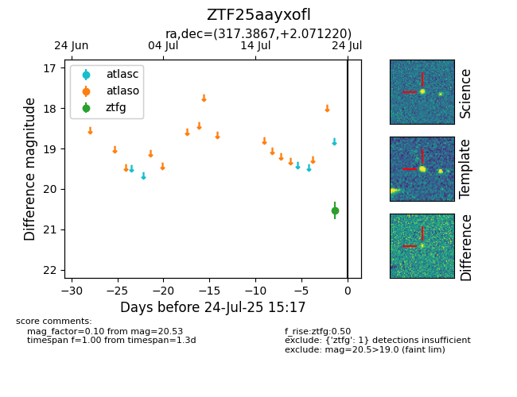

Target ZTF25aayxofl at 2025-07-24 15:17, see:
FINK: fink-portal.org/ZTF25aayxofl
Lasair: lasair-ztf.lsst.ac.uk/objects/ZTF25aayxofl
ALeRCE: alerce.online/object/ZTF25aayxofl
alt names
ZTF25aayxofl (ztf,fink)
coordinates:
equatorial (ra, dec) = (317.3867,+2.07122)
galactic (l, b) = (52.3636,-29.18518)
photometry
last ztfg=20.53
1 ztfg detections
